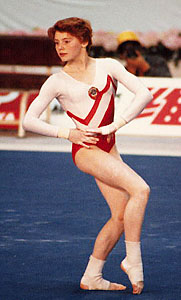

Elena Shevchenko (USSR)
1988 Olympic Team Gold Medalist

Medal Total
Olympic Games: 1 Gold
Elena was born on October 7, 1971, in Moscow and trained at the Central Army Sports Club with coaches Irina and Viktor Razumovsky. Her older sister Irina was also a gymnast with a Master of Sports classification.
Elena's first year competing in the senior ranks (1986) was a successful one. She won all-around medals at the Ahoy Cup, Goodwill Games, and USSR Spartakiad. In 1987, the women's national team coach Andrei Radionenko decided to select competitors for the European and World Championships based on their all-around finishes at the USSR Cup and USSR Championships. Unfortunately, Elena's 8th-place finish at the USSR Cup that September meant she would not travel to Rotterdam, even as an alternate.
In 1988 Elena won the European Cup, finished 3rd at the USSR Championships, and was a member of the Soviet Union's gold-medal winning Olympic team. After retiring from the sport in 1989, she became a coach in her hometown.
Competition Results
1983
East Bloc Youth Tournament: 3rd AA
1985
All-Union Youth Games: 4th team, 3rd AA, 2nd B
Jr. Friendship Tournament (Druzhba): 1st Team, 3rd AA, 1st FX, 3rd V
Jr. GDR-USSR Dual Meet: 4th AA
Moscow Youth Sports Games: 1st Team, 1st AA, 1st B
USSR Championships: 15th AA
1986
Ahoy Cup: 3rd AA, 1st V, 2nd UB, 2nd FX
Armed Forces Championship: 1st AA
Goodwill Games: 1st Team, 3rd AA, 2nd V
USSR Championships: 1st FX, 2nd V, 3rd B
USSR Cup: 6th AA
USSR Spartakiade: 1st AA, 1st FX, 2nd B, 3rd UB, 5th V
World Sports Fair: 2nd AA, 1st V, 2nd B, 2nd FX
1987
USSR Championships: 1st Team, 8th AA
USSR Cup: 8th AA, 3rd B
World Sports Fair: 1st AA, 1st UB, 1st B, 1st FX, 2nd V
1988
European Cup: 1st AA, 1st B, 1st FX, 2nd V, 2nd UB
Hungarian International: 1st AA, 1st B, 2nd V, 2nd FX
Olympic Games: 1st Team
USA-USSR Dual Meet: 1st Team, 5th AA
USSR Championships: 1st Team, 3rd AA
USSR Cup: 4th AA
1989
Konica Cup: 2nd AA, 3rd FX, 7th B
Moscow News: 3rd AA, 1st V, 2nd B
USA-USSR Dual Meet: 1st Team, 4th AA
USSR Cup: 10th AA
1991
World Professional Championships: 1st V, 4th UB
This page was created on September
02, 2006 and was last updated on September 14, 2026.
© Gymn Forum